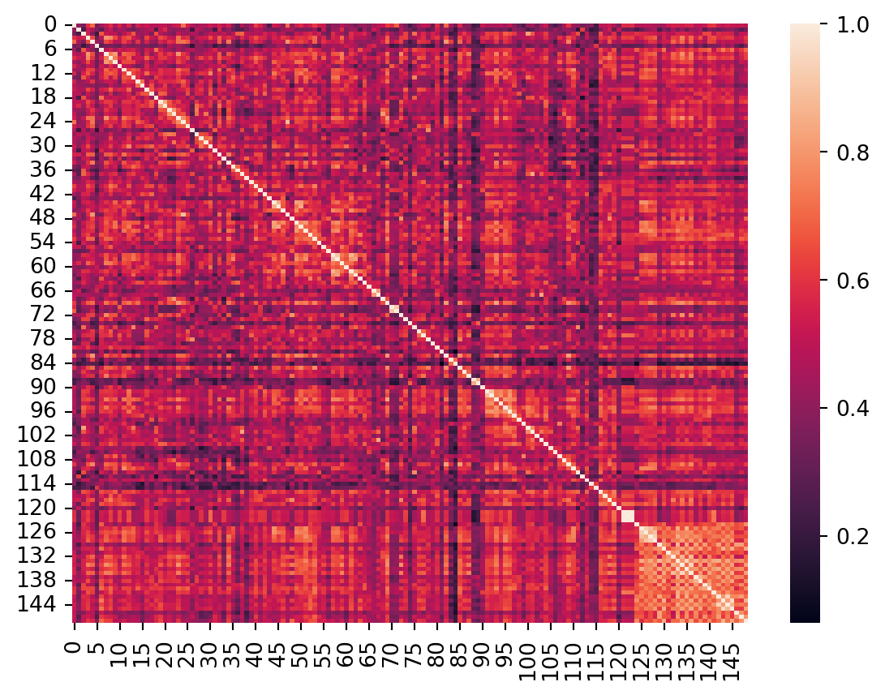
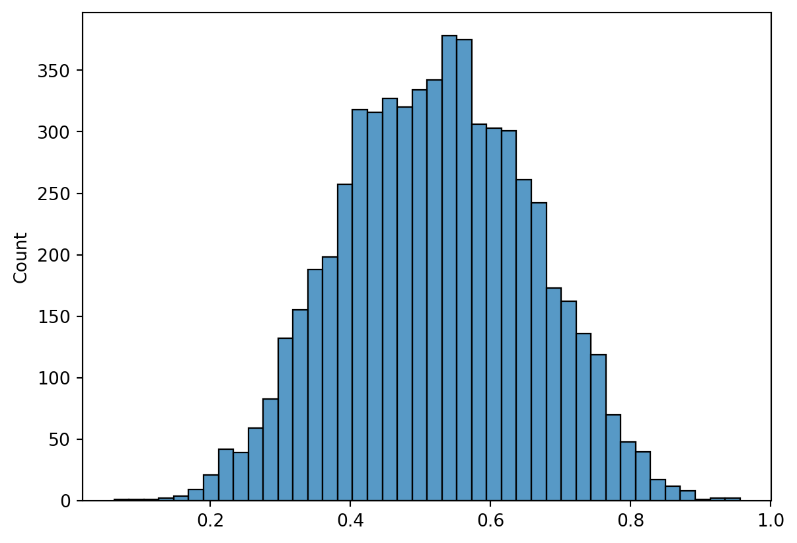

import os
import pandas as pd
import numpy as np
from matplotlib import pyplot as plt
import seaborn as sns
%load_ext autoreload
%autoreload 2The autoreload extension is already loaded. To reload it, use:
%reload_ext autoreloadimport os
import pandas as pd
import numpy as np
from matplotlib import pyplot as plt
import seaborn as sns
%load_ext autoreload
%autoreload 2The autoreload extension is already loaded. To reload it, use:
%reload_ext autoreloaddef get_data(
assessment='Parent_Measures',
domain='Demographic_Questionnaire_Measures',
measure='Child_Behavior_Checklist.csv',
abbrev='CBCL'):
"""get data from a particular questionnaire and accompanying questions from dictionary
"""
# base directory
base_dir = '/Users/maedbhking/Documents/healthy_brain_network/data/raw/phenotype/'
# answers
fpath = os.path.join(os.path.join(base_dir, assessment, domain, measure + '.csv'))
df = pd.read_csv(fpath)
df_A = df.filter(like=f'{abbrev},')
# questions
df_Q = pd.read_excel(os.path.join(base_dir, 'Release9_DataDic', f'{abbrev}.xlsx'), header=1)
# do some preprocessing on `Question`
df_Q = df_Q[df_Q['Question'].str.contains('^[0-9]*[.] ')]
df_Q['Question'] = df_Q['Question'].str.replace('/', ' or ').str.replace('^[0-9]*[.] ', '')
df_Q = df_Q.dropna()
# do some preprocessing on `Answer`
df_A.columns = df_A.columns.str.replace(f'{abbrev},', '')
columns = df_Q['Variable'].tolist()
df_A = df_A[columns]
return df_Q, df_A
def sentence_similarity(sentences):
"""calculate sentence similarity across all sentence combinations
Args:
sentences (list): list of sentences
"""
from sentence_transformers import SentenceTransformer, util
# get model
model = SentenceTransformer('distilbert-base-nli-mean-tokens')
# calculate sentence embeddings
sentence_embeddings = model.encode(sentences)
#Compute cosine-similarities for each sentence with each other sentence
cosine_scores = util.cos_sim(sentence_embeddings, sentence_embeddings)
#Find the pairs with the highest cosine similarity scores
pairs = []
for i in range(len(cosine_scores)-1):
for j in range(i+1, len(cosine_scores)):
pairs.append({'index': [i, j], 'score': cosine_scores[i][j]})
#Sort scores in decreasing order
pairs = sorted(pairs, key=lambda x: x['score'], reverse=True)
return cosine_scores, pairs
def answer_similarity(dataframe, pairs):
"""calculate correlations across answers for all `pairs` of sentences
Args:
dataframe (pd dataframe):
pairs (list of dict): output from `sentence_similarity`
"""
# calculate correlations across answers
df_corr = dataframe.corr()
pairs_A = []
for idx in range(len(pairs)):
r = pairs[idx]['index'][0]
c = pairs[idx]['index'][1]
rcorr = df_corr.iloc[r,c]
pairs_A.append(rcorr)
return pairs_A
def plot_heatmap(array, labels=None):
"""plot heatmap of array with labels (optional)
Args:
array (np array):
labels (list of str or None): optional
"""
ax = sns.heatmap(array)
if labels is not None:
ax.set_xticklabels(
labels,
rotation=45,
horizontalalignment='right'
)
ax.set_yticklabels(
labels,
rotation=360,
horizontalalignment='right'
)
plt.show()
def plot_top_sentences(pairs, sentences, A_similarity=None, percent=10, title=None):
"""plot most similar sentences in a tabular format
Args:
pairs (list of dict): output from `sentence similarity`
sentences (list of str): list of sentences
A_similarity (list of str or None): (optional) output from `answer_similarity`
percent (int): percentage of top sentences to print
"""
from tabulate import tabulate
pairs_all = pairs
header = ["Sentence 1", "Sentence 2", "Question"]
if A_similarity is not None:
# add answer similarity score to `pairs` dictionary
pairs_all = []
header = ["Sentence 1", "Sentence 2", "Question", "Answer"]
for r, score in zip(pairs, A_similarity):
r.update({'score_A': score})
pairs_all.append(r)
#Output the pairs with their score
top_sentences = []
num_sentences = int(len(sentences)*percent/100)
for pair in pairs_all[0:num_sentences]:
i, j = pair['index']
if A_similarity is not None:
row = [sentences[i], sentences[j], round(pair['score'].tolist(),2), round(pair['score_A'],2)]
else:
row = [sentences[i], sentences[j], round(pair['score'].tolist(),2)]
top_sentences.append(row)
top_sentences.insert(0, header)
head='firstrow'
if title is not None:
head = [title, '','','']
print(tabulate(top_sentences, headers=head, tablefmt="grid"))
# get data
df_Q, df_A = get_data(assessment='Parent_Measures',
domain='Demographic_Questionnaire_Measures',
measure='Child_Behavior_Checklist', # Child_Behavior_Checklist
abbrev='CBCL'
)
# sentences
sentences = df_Q['Question'].tolist()
# calculate sentence similarity
cosine_scores, pairs = sentence_similarity(sentences)
# plot heatmap
plot_heatmap(array=cosine_scores, labels=None)
# plot distribution of scores
scores = [r['score'].tolist() for r in pairs]
sns.histplot(scores)
plt.show()
# get answer similarity
A_similarity = answer_similarity(dataframe=df_A, pairs=pairs)
# plot table
plot_top_sentences(pairs, sentences, A_similarity, percent=10, title='CBCL')/Users/maedbhking/.local/share/virtualenvs/cerebellum_learning_connect-99heifxR/lib/python3.7/site-packages/ipykernel_launcher.py:22: FutureWarning:
The default value of regex will change from True to False in a future version.


+----------------------------------------+---------------------------------+----------+--------+
| CBCL | | | |
+========================================+=================================+==========+========+
| Sentence 1 | Sentence 2 | Question | Answer |
+----------------------------------------+---------------------------------+----------+--------+
| Strange behavior | Strange ideas | 0.96 | 0.38 |
+----------------------------------------+---------------------------------+----------+--------+
| Gets teased a lot | Teases a lot | 0.94 | 0.26 |
+----------------------------------------+---------------------------------+----------+--------+
| Strange behavior | Suspicious | 0.93 | 0.25 |
+----------------------------------------+---------------------------------+----------+--------+
| Doesn't get along well with other kids | Not liked by other kids | 0.92 | 0.58 |
+----------------------------------------+---------------------------------+----------+--------+
| Argues a lot | Talks too much | 0.9 | 0.32 |
+----------------------------------------+---------------------------------+----------+--------+
| Strange ideas | Suspicious | 0.89 | 0.25 |
+----------------------------------------+---------------------------------+----------+--------+
| Plays with own sex parts too much | Thinks about sex too much | 0.88 | 0.27 |
+----------------------------------------+---------------------------------+----------+--------+
| Prefers being with older kids | Prefers being with younger kids | 0.88 | 0.21 |
+----------------------------------------+---------------------------------+----------+--------+
| Suspicious | Worries | 0.88 | 0.23 |
+----------------------------------------+---------------------------------+----------+--------+
| Nervous, highstrung, or tense | Nervous movements or twitching | 0.87 | 0.45 |
+----------------------------------------+---------------------------------+----------+--------+
| Too fearful or anxious | Stubborn, sullen, or irritable | 0.87 | 0.28 |
+----------------------------------------+---------------------------------+----------+--------+